| Initial | Follow-up | |
|---|---|---|
| Grade 2 | 8 | 6 |
| Grade 3 | 12 | 9 |
| Grade 4 | 7 | 6 |
| Total | 27 | 21 |
CORE + Prosody: Feasibility of Use
Introduction
Oral reading fluency (ORF), generally defined as reading quickly, accurately, and with prosody (i.e., the expressiveness with which students read), is an essential part of reading proficiency. As perhaps the most prevalent reading assessment used in classrooms across the country, words read correctly per minute (WCPM) measures of ORF are robust indicators of comprehension and overall reading achievement; however, traditional ORF assessments do not align with the theoretical definition of fluency, measuring only accuracy and rate and neglecting the measurement of prosody. Educators recognize that fluent reading extends beyond speed and correctness and involves prosody; or, expression, rhythm, stress, and intonation. Prosody reflects not only decoding but also the extent to which readers construct meaning from text. Research has shown that measures of prosody explain variance in reading comprehension beyond measures of rate and accuracy, and that students with good prosody have better comprehension than might be expressed based on their ORF scores alone Miller & Schwanenflugel (2008). This study is part of a larger project—CORE + Prosody—aimed to respond to the call “to expand the way fluency is measured so that it encompasses more than rate and accuracy” (Kuhn, Schwanenflugel, & Meisinger, 2010, p. 243). The purpose of CORE + Prosody was to develop and validate an automated scoring system to measure, unite, and scale the rate, accuracy, and prosody in ORF to be used as a screening and progress monitoring measure for students in Grades 2 through 4. The purpose of this study is to examine the feasibility of use of the project’s ORF estimates.
The CORE + Prosody assessment is very similar to ORF assessments that most students take three times per year, except we have developed a score for prosody, which is a novel score of which teachers do not typically have access. The goal of this study was to understand teachers’ perceptions and experiences with prosody, and how whether a meausure of prosody might contribute instructional information beyond WCPM. To meet this goal, we administered two surveys (closed- and open-ended responses) to teachers whose students were given the CORE + Prosody assessment to understand those teachers’ perceptions of prosody, and how it might be used in their classroom.
The initial survey captured baseline awareness, beliefs, and practices related to evaluating and teaching prosody, while the follow-up survey gave teachers an opportunity to review their students’ prosody scores; a four-point nominal prosody score based on the 2005 NAEP scale (Daane, 2005), and a continuous percentile scale. Comparing responses across the two time points allowed the exploration of (a) whether teachers’ perceptions of or willingness and capacity to use prosody changed after reviewing their students’ prosody scores, and (b) how teachers evaluate the potential usefulness and accuracy of prosody for informing instruction. We also examined grade-level patterns to understand whether perceptions differed across developmental stages in reading instruction.
Method
Procedures & Measure
In the 2023-24 school year, we administered six CORE passages to 373 students across Grades 2-4 from 4 schools and 27 classrooms (8 Grade 2, 12 Grade 3, and 7 Grade 4). Students were assessed online, using classroom or school devices. The audio files were scored by an automated speech recognition engine for both model-based WCPM (Kara, Kamata, Potgieter, & Nese, 2020; Nese, 2022; Nese & Kamata, 2017, 2021a, 2021b; Potgieter, Kamata, & Kara, 2017) and prosody (Nese & Kamata, n.d.; Sammit et al., 2022; I. Wang, Larson, Kamata, & Nese, 2023; Y. Wang et al., 2024, 2025). Classroom teachers did not administer or score the fluency assessments; instead, they reviewed prosody and WCPM outcomes generated automatically by they project.
Following the student participation, participating classroom teachers were invited to complete two online surveys, as the focus was on teachers’ perceptions of prosody and its feasibility of use rather than student outcomes. The purpose of the initial survey was to understand teachers’ perceptions of oral reading fluency assessments and prosody, and how they are used in their classroom. The initial survey asked about perceptions of ORF assessment and prosody, including the latter’s usefulness for instruction, current classroom practices, and whether teachers might use prosody to guide teaching (see Initial Survey below). The follow-up survey provided teachers with their students’ oral reading fluency and prosody scores from the study with the purpose of understanding if and how those are helpful to their teaching and students. The follow-up survey was guided by teachers’ direct exposure to student prosody scores, including preferred reporting score format (nominal scale vs. continuous percentile), perceived accuracy of prosody and WCPM measures, and ways prosody could inform instruction (see Follow-Up Survey below). Both surveys included closed- and open-ended questions and prompts.
Sample
A total of 27 teachers in Grades 2 through 4 completed the initial survey and 21 completed the follow-up survey across Grades 2–4. Please see Table 1.
Data Analysis
Closed-ended survey responses were analyzed descriptively using frequencies and percentages to examine patterns in teachers’ responses.
Open-ended responses were analyzed in two steps. First, thematic clustering was conducted using the {ellmer} package (Wickham, Cheng, Jacobs, Aden-Buie, & Schloerke, 2025) to generate themes based on the content of teacher responses. During the qualitative analysis process, AI-assisted theme identification was conducted using Google Gemini Gemini 2.5 Flash through the chat_google_gemini() function in R. For both the initial and follow-up-survey responses, the same structured prompt was used. The prompt instructed the AI system to analyze teachers’ responses to all nine of the open-ended questions across both surveys.The following prompt was given to the AI engine: identify five key themes, provide a brief definition for each theme, report the number of responses supporting each theme. The resulting AI-generated themes and definitions were then used as the thematic framework for subsequent coding and analysis. The AI-generated themes were established prior to coding and were not regenerated during later stages of analysis.
Second, responses were coded by two humans and AI for alignment with the generated themes using a binary response–theme framework. That is, raters identified whether a teacher’s responses was aligned with each of the five themes. The result was a response-by-theme matrix (aligned vs. not aligned). An additional column was included for each set of themes across the nine variables to present the mean percent alignment among raters. For each theme, the percentage endorsement was first calculated separately for each rater and then averaged across the available raters (two or three, depending on the variable). Human raters were blind to the AI classifications. Human raters independently reviewed six of the nine open-ended questions, with each rater reviewing three of the same questions and three different questions. Thus, all nine questions were reviewed by at least two raters: three questions were reviewed by human 1 and AI, three questions were reviewed by human 2 and AI, and three questions were reviewed by all three raters. Human 1 was research faculty with a PhD in School Psychology and over 16 years experience. Human 2 was a graduate student with multiple years of experience in academia and research. Separately, inter-rater agreement was calculated as the percentage of exact agreement for each open-ended question. For each question, agreement percentages were computed as the proportion of response–theme combinations for which raters assigned the same coding decision (aligned or not aligned). Mean endorsement percentages across raters were used to describe variability in endorsement.
All analyses and data visualizations were conducted and created in the R programming environment (R Core Team, 2025) with the following R packages: ellmer (Wickham, Cheng, et al., 2025), gt (Iannone et al., 2025), here (Müller, 2025), janitor (Firke, 2024) knitr (Xie, 2025), kableExtra (Zhu, 2024), readxl (Wickham & Bryan, 2025), scales (Wickham, Pedersen, & Seidel, 2025), and tidyverse (Wickham et al., 2019) .
Results
We first report the inter-rater reliability for the scoring of the open-ended survey questions, then describe the results of both surveys.
Inter-Rater Agreement
Inter-rater agreement was examined across the coded response–theme pairs for open-ended items of both the initial and follow-up surveys (Table 2). Because some items were coded jointly by two human raters and AI, while others were coded by one human rater and AI, not all agreement comparisons were available for every variable.
Agreement levels were generally high across raters and questions. The three items coded by all three raters showed pairwise agreement ranging from 81.0% to 92.2%, and agreement across all three raters from 76.2% to 86.1%. Among the six items coded by one human rater and AI, agreement was ranged from 80.7% to 95.2%.
Across all coded response–theme pairs (N = 1,125), overall pairwise agreement between Human 1 and Human 2 was 85.1%, between Human 1 and AI was 86.7% between, and between Human 2 and AI was 87.6%. Overall agreement across all three raters was 69.4%. In general, the agreement values indicate generally consistent theme classification across raters and support the reliability of the coding procedures used for the open-ended responses.
| Inter-Rater Agreement | |||||
| Percent agreement across coded response-theme pairs | |||||
| Open-ended Question | Coded Pairs | Human1–Human2 (%) | Human1–AI (%) | Human2–AI (%) | All Three (%) |
|---|---|---|---|---|---|
| Initial Survey | |||||
| How do oral reading fluency scores influence your teaching, either for the whole classroom or individual students? | 135 | 82.2 | 85.9 | 87.4 | 77.8 |
| How might prosody scores influence your teaching? | 135 | 92.2 | 90.4 | 91.1 | 86.1 |
| How do you evaluate prosody in your classroom? | 135 | – | – | 83.0 | – |
| How do you use prosody to inform your teacher? | 135 | – | – | 80.7 | – |
| How do you teach prosody in your reading instruction? | 135 | – | 87.0 | – | – |
| How does a student’s prosody influence the reading supports you provide? | 135 | – | 85.1 | – | – |
| Follow-up Survey | |||||
| How might you use these prosody measures to inform your teaching? | 105 | 81.0 | 81.0 | 90.5 | 76.2 |
| Do the prosody measures provide additional or new information for you about your students’ reading? | 105 | – | – | 95.2 | – |
| Why do you prefer that prosody measure? | 105 | – | 90.5 | – | – |
| Overall | |||||
| Overall Agreement | 1125 | 85.1 | 86.7 | 87.6 | 69.4 |
Initial Survey
Usefullness of ORF Scores
All teachers across Grades 2–4 reported that ORF scores were useful for their teaching, with 100% affirmative responses at each grade level.
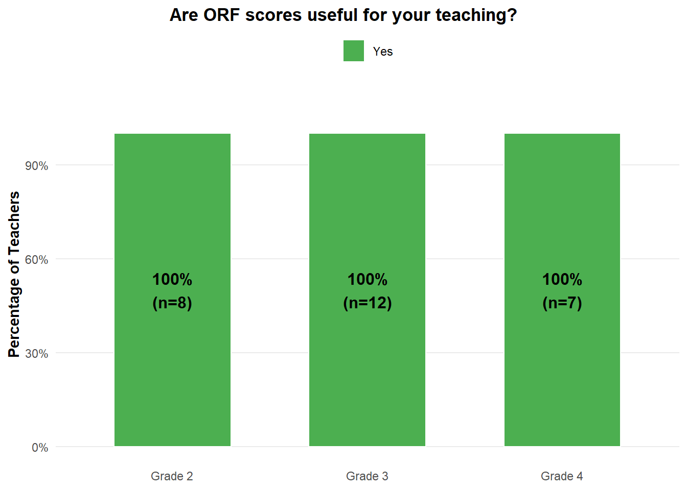
When describing how ORF scores influenced their teaching, teachers most commonly referenced using ORF data to support instructional decision-making. Their responses highlighted the use of ORF scores for flexible grouping and differentiated instruction, identifying students needing intervention or additional support, informing instructional planning and resource selection, and monitoring student progress over time. Overall, teachers described ORF scores as useful for identifying students’ reading needs and guiding both whole-class and individual instructional decisions.
| Theme | Definition | Mean % Agreement |
|---|---|---|
| Flexible Grouping & Differentiation | Teachers predominantly leverage oral reading fluency scores to organize students into flexible small groups or assign reading partners. This allows for differentiated instruction, ensuring students receive support tailored to their specific reading levels and needs. | 63% |
| Targeted Intervention & Support | ORF scores are crucial for identifying students who require specific interventions or additional support. This includes addressing difficulties in areas such as phonics, accuracy, pacing, or comprehension, and connecting students with specialists when needed. | 49% |
| Diagnostic Assessment & Instructional Planning | Teachers use ORF scores as a diagnostic tool to gain insights into individual student proficiency and identify specific areas of strength or weakness. This data then informs broader instructional strategies, curriculum adjustments, and the creation of targeted mini-lessons for the whole class or specific groups. | 40% |
| Resource & Curriculum Selection | ORF scores guide teachers in selecting appropriate reading materials, curriculum, and supplementary resources. This ensures that students are provided with books and programs that align with their current reading levels and support their development. | 17% |
| Progress Monitoring & Goal Setting | Teachers utilize ORF scores to regularly monitor student growth in reading fluency over time. This ongoing assessment helps in tracking progress, setting individualized learning goals, and evaluating the effectiveness of instructional approaches. | 14% |
Teaching Prosody
Most teachers reported teaching prosody in their reading instruction, although responses varied somewhat across grade levels. A majority of teachers in Grade 2 (50%), Grade 3 (83%), and Grade 4 (57%) indicated that they taught prosody, while relatively few teachers reported not teaching it. Some uncertainty was reflected among Grade 2 and Grade 4 teachers, where 38% and 29% selected Maybe, respectively.
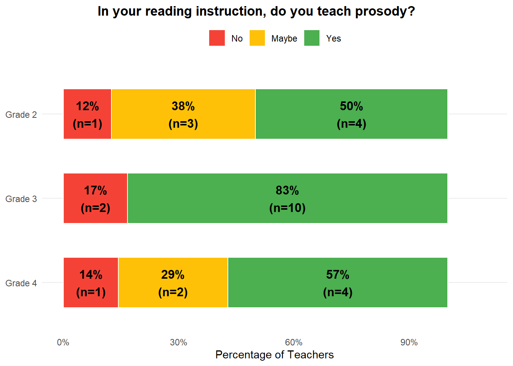
Among teachers who reported teaching prosody, their responses most commonly described modeling expressive reading and explicitly teaching prosodic elements such as intonation, pacing, rhythm, and punctuation. Teachers also described using practice-based activities, including partner and choral reading, integrating prosody into broader reading instruction and different text types, and differentiating prosody instruction based on students’ reading levels and fluency needs.
| Theme | Definition | Mean % Alignment |
|---|---|---|
| Explicit Instruction on Prosodic Elements & Punctuation | Teachers directly teach students about specific components of prosody, such as intonation, rhythm, expression, and pacing. They also emphasize how punctuation marks guide reading and influence expression. | 39% |
| Modeling and Teacher Demonstration | Teachers actively demonstrate fluent and expressive reading themselves, often using read-alouds or 'I read, you read' techniques. They may also use positive and negative examples to highlight prosodic elements. | 37% |
| Practice-Based Activities | Teachers incorporate various student-led activities to provide opportunities for practicing prosody. These activities include partner reading, choral reading, rereading, and specific 'expression challenges.' | 26% |
| Integration with Broader Reading Skills/Text Types | Prosody is taught as an integral part of overall fluency instruction or through engagement with specific text genres like poetry. It is not always a standalone lesson but woven into other reading activities. | 19% |
| Differentiated Instruction | Prosody instruction is often tailored to students' current reading levels, with more advanced concepts introduced to fluent readers. This differentiation may occur within small, skill-based groups. | 15% |
Evaluating Prosody
Teachers were asked whether they evaluated prosody in their classrooms. Across grade levels, approximately half or more of teachers reported evaluating prosody, including 62% of Grade 2 teachers, 50% of Grade 3 teachers, and 57% of Grade 4 teachers. Responses also reflected some uncertainty in practice, particularly among Grade 3 teachers, where 33% responded Maybe. Smaller proportions of teachers reported not evaluating prosody, including 17% of Grade 3 teachers and 29% of Grade 4 teachers.
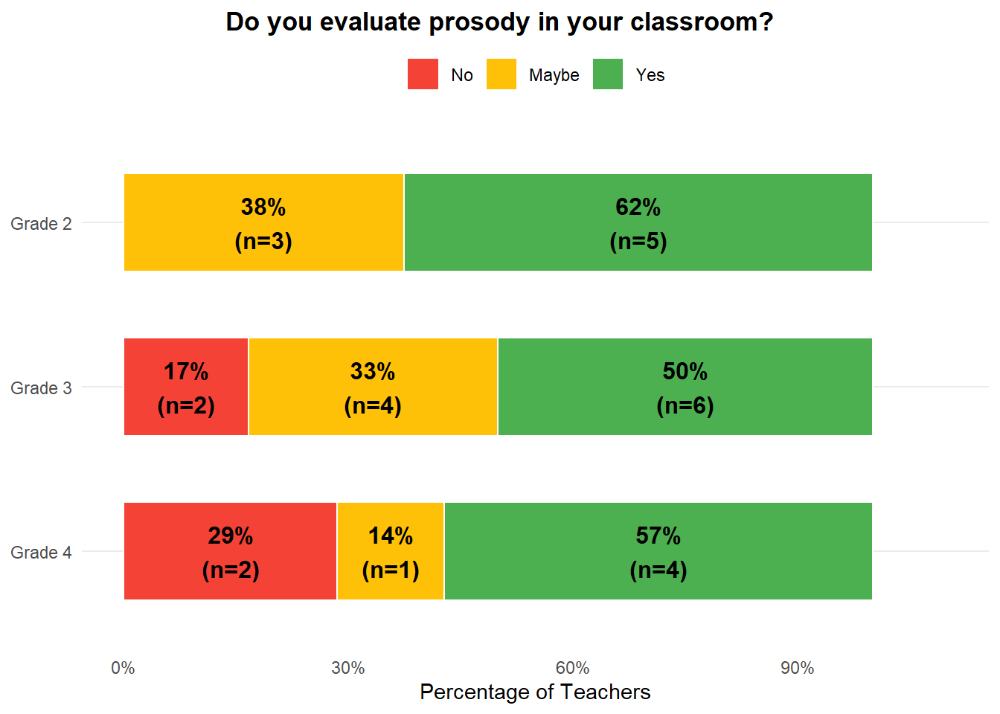
Among teachers who reported evaluating prosody, their responses most commonly described using informal classroom observations, anecdotal notes, and existing ORF assessments to evaluate students’ expressive reading. Teachers also described evaluating prosody during instructional activities through modeling expressive reading and observing students’ comprehension and meaning-making. Some responses additionally referenced using prosody-related information for reporting or broader assessment purposes.
| Theme | Definition | Mean % Alignment |
|---|---|---|
| Informal Observation & Anecdotal Notes | Teachers frequently evaluate prosody by simply listening to students read aloud in various classroom settings. They often take mental or written anecdotal notes based on these observations, rather than using a formal rubric. | 33% |
| Integration with Formal Fluency Assessments | Prosody is often evaluated as a component or an aspect of existing formal oral reading fluency (ORF) assessments. This includes one-minute timings, benchmarking, and progress monitoring tools, sometimes using specific platforms. | 30% |
| Instructional Focus & Practice | Teachers incorporate prosody evaluation into their instructional practices, observing students during explicit teaching of prosody components or during guided practice. They use these opportunities to provide feedback and model expressive reading. | 22% |
| Reporting & Data Collection | Prosody evaluation contributes to formal reporting, such as district report cards, or is used for general data collection purposes. This highlights the administrative and accountability aspects of assessment. | 19% |
| Connection to Comprehension & Meaning | Prosody evaluation is linked to a broader understanding of reading, where expression and intonation are seen as crucial for conveying meaning and supporting comprehension. Teachers assess how prosody contributes to the student's overall understanding and communication of the text. | 17% |
Influence of Prosody
Teachers reported mixed perspectives regarding whether students’ prosody influenced the reading supports they provided. Grade 3 teachers most frequently indicated that prosody influenced instructional supports (67%), whereas responses were more divided among Grade 2 and Grade 4 teachers. In Grade 4, 43% of teachers reported that prosody did not influence the supports they provided, while 29% selected Maybe. Similarly, Grade 2 teachers were evenly split between Yes (38%) and Maybe (38%), with 25% responding No.
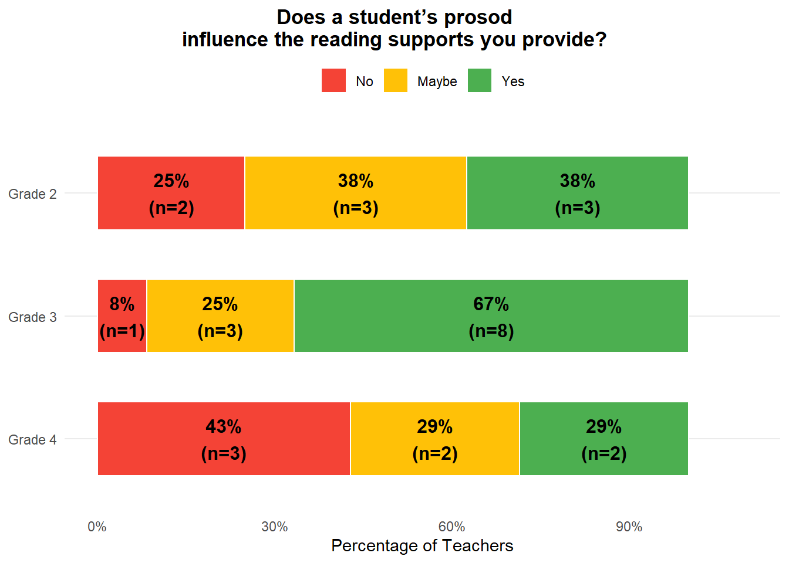
Among teachers who indicated that prosody influenced the reading supports they provided, their responses most commonly described using prosody to inform grouping and placement decisions, targeted instructional adjustments, and differentiated supports. Teachers also connected prosody to broader diagnostic insights regarding students’ comprehension and engagement with text, while some responses reflected the view that prosodic development becomes more relevant after foundational decoding and fluency skills are established.
| Theme | Definition | Mean % Alignment |
|---|---|---|
| Diagnostic Insight & Comprehension Link | Prosody serves as an indicator of a student's understanding and engagement with the text. It helps teachers diagnose whether a student is merely decoding words or truly comprehending the meaning and nuances of what they read. | 9% |
| Targeted Instruction & Differentiation | Prosody informs specific instructional adjustments, allowing teachers to focus on particular areas of need for struggling readers or to provide more advanced challenges for proficient ones. This ensures instruction is tailored to the student's current reading expression level. | 26% |
| Grouping and Placement | Teachers utilize a student's prosody, often alongside other fluency measures, to determine appropriate instructional groupings. This includes placing students in small groups, assigning reading partners, or leveling for differentiated instruction. | 22% |
| Developmental Progression of Skills | Teachers often consider prosody as a skill that develops after foundational decoding and basic fluency are established. Supports for prosody are typically introduced or emphasized once students are no longer solely focused on word-by-word reading. | 19% |
| Resource Allocation & Support Adjustment | Prosody influences how teachers allocate instructional resources, such as their own time or that of an educational assistant, and when they decide to modify or pull back existing reading supports. This ensures that support is appropriately matched to the student's expressive reading needs. | 15% |
Using Prosody
Teachers reported varying levels of using prosody to inform their teaching across grade levels. A majority of Grade 2 (62%) and Grade 3 (58%) teachers indicated that they used prosody to guide their teaching, whereas only 14% of Grade 4 teachers reported doing so. More than half of Grade 4 teachers (57%) reported not using prosody to inform instruction, while a notable proportion of teachers across grades selected Maybe, suggesting some variability in how prosody was incorporated into instructional decision-making.
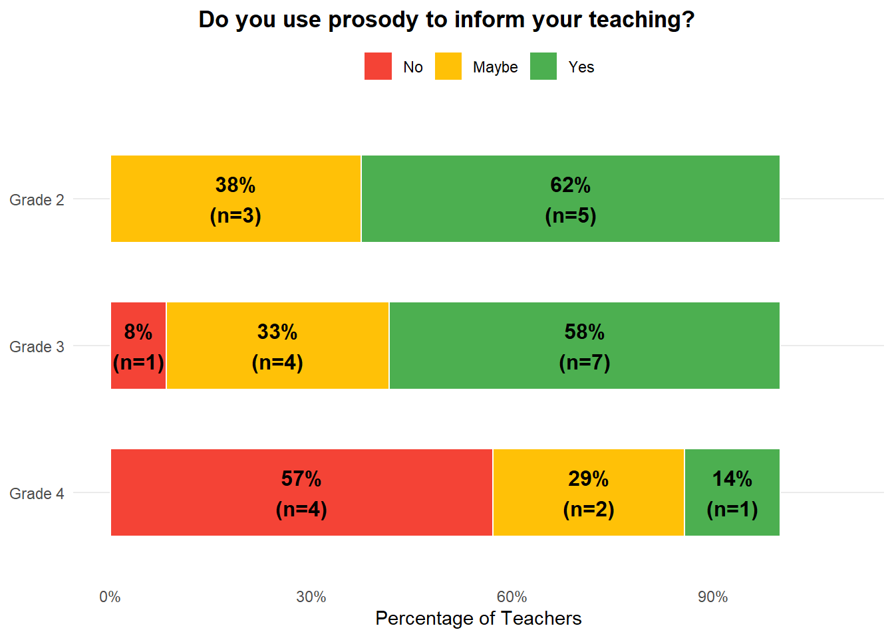
Among teachers who reported using prosody to inform their teaching, their responses most commonly described using prosody for grouping and differentiated instruction, monitoring students’ comprehension through expressive reading, and supporting engaging literacy activities. Teachers also described adapting instruction based on students’ developmental reading levels and fluency needs, as well as using modeling and explicit fluency instruction to support prosodic development.
| Theme | Definition | Mean % Alignment |
|---|---|---|
| Grouping and Partnering | Teachers utilize prosody to strategically group students for small group instruction or partner reading activities. This approach facilitates peer modeling and provides targeted support based on students' expressive reading abilities. | 26% |
| Differentiated and Developmental Instruction | Teachers adjust their prosody instruction based on students' current reading levels and developmental stages. They recognize that foundational skills like phonics and decoding often need to be established before advanced prosody work can be effectively taught. | 26% |
| Prosody as Comprehension Indicator | Prosody is considered a key component of overall reading fluency and serves as a strong indicator of a student's comprehension. Teachers observe prosodic elements like expression, pacing, and adherence to punctuation to gauge a student's understanding of the text. | 22% |
| Explicit Instruction and Modeling | Teachers explicitly teach prosody by modeling expressive reading and providing direct instruction on elements such as appropriate pausing, voice changes, and intonation. This direct teaching helps students develop their own ability to read with suitable expression. | 20% |
| Enhancing Engagement and Curriculum | Prosody is employed to make reading more engaging for students, both through teacher modeling during read-alouds and by integrating prosodic elements into curriculum activities like poetry. This fosters a deeper connection to the text and enhances the overall learning experience. | 17% |
Usefulness of Prosody Scores
Teachers reported varying levels of perceived usefulness of prosody scores across grade levels. Grade 3 teachers most frequently indicated that prosody scores would be useful for their teaching (67%), whereas Grade 2 teachers more commonly selected Maybe (75%). Responses among Grade 4 teachers were also mixed, with 43% responding Yes and 57% selecting Maybe. Notably, no teachers responded No to this question.
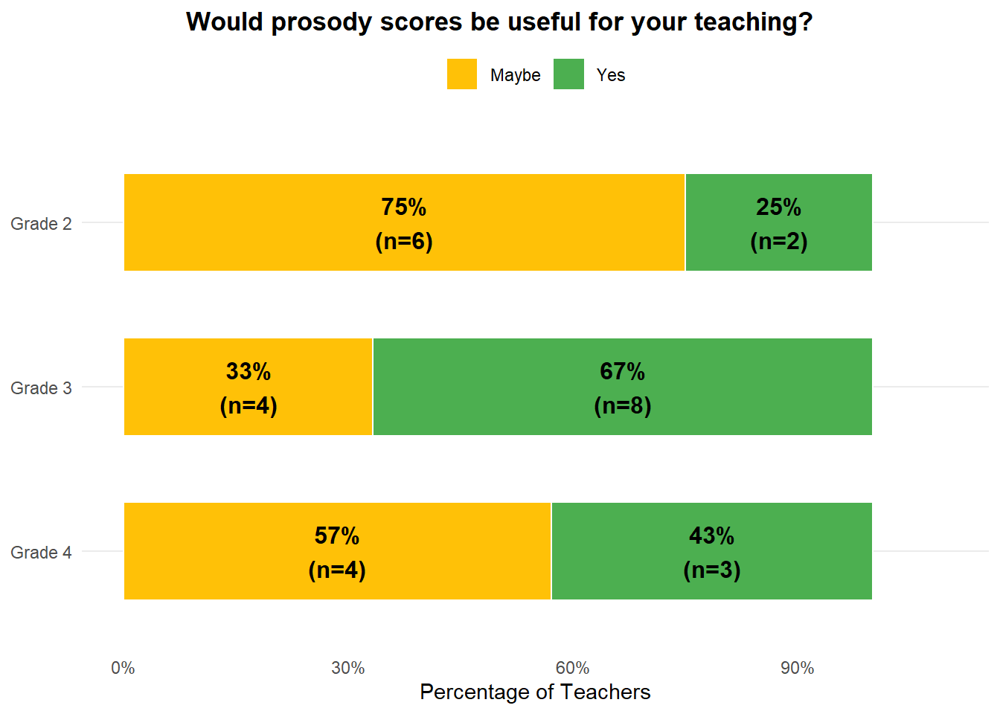
Teachers’ responses suggested that they viewed prosody scores as potentially valuable for extending existing assessment information. Common themes included using prosody scores as indicators of comprehension, informing targeted instruction and intervention, providing enhanced diagnostic insight into students’ reading abilities, and supporting progress monitoring and goal setting. Teachers also described prosody scores as an additional source of instructional data that could complement existing fluency measures and contribute to a more comprehensive understanding of students’ reading development.
| Theme | Definition | Mean % Agreement |
|---|---|---|
| Progress Monitoring & Goal Setting | Prosody scores would offer a new dimension for tracking student growth and development in expressive reading over time. Teachers could utilize these scores to set more specific and comprehensive goals for students, fostering continuous improvement in their reading journey. | 4% |
| Informing Targeted Instruction | Prosody scores would directly guide teachers in designing and implementing specific instructional strategies and interventions. This information would enable differentiated teaching to address identified gaps and tailor support to individual student needs or small groups. | 36% |
| Value of Additional Data | Teachers express a desire for more data points to gain a complete picture of student learning and drive instruction. Prosody scores would serve as an important additional piece of information, complementing existing assessments for a holistic view. | 22% |
| Enhanced Diagnostic Insight | Prosody scores would provide teachers with a more comprehensive and nuanced understanding of a student's reading abilities. This data would help diagnose specific strengths and weaknesses beyond basic decoding, offering deeper insights into their overall reading profile. | 12% |
| Indicator of Comprehension | Prosody scores could serve as a valuable indicator of a student's reading comprehension and understanding of the text. Teachers would use these scores to infer how well students are processing meaning, beyond just decoding words. | 11% |
Follow-up Survey
Preferred Prosody Measure
Teachers were given an overview of the two measures of prosody (scores and percentiles), and then a table that contained their students’ names, WCPM scores, prosody percentile, and prosody score (see Follow-up Survey). They were then asked which prosody measure they preferred. The results were evenly split, with 52% (n = 11) preferring the prosody score and 48% (n = 10) preferring the prosody percentile.
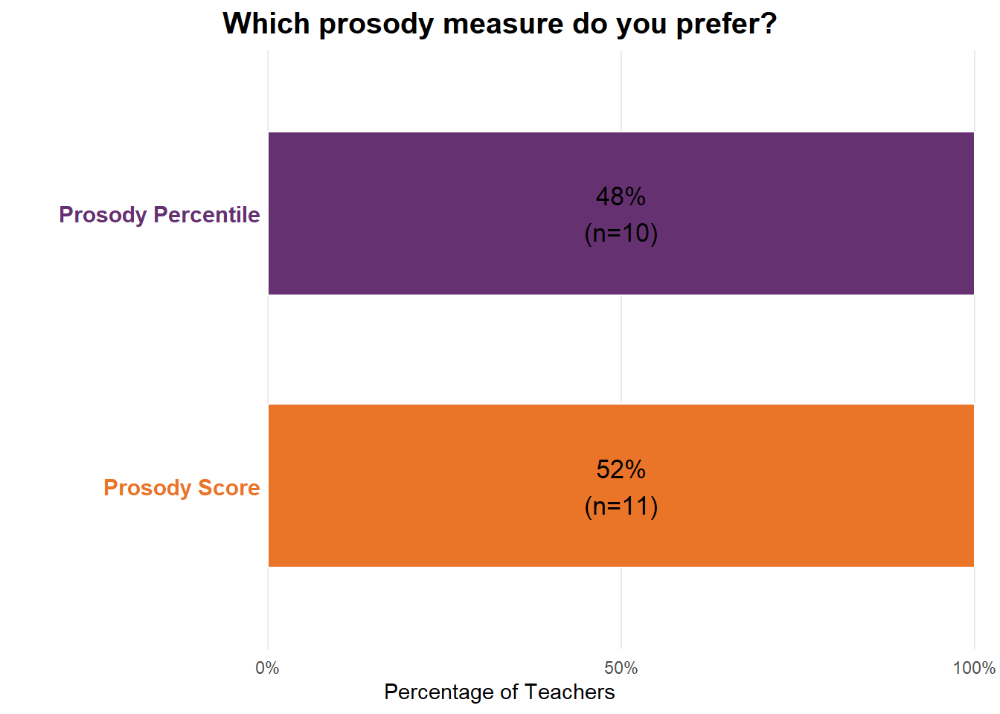
| Theme | Definition | Score | Percentile | Mean % Alignment |
|---|---|---|---|---|
| Clarity and Ease of Understanding | Teachers prefer the prosody measure that is straightforward and simple to interpret. This clarity helps them quickly grasp a student's performance without needing extensive explanation. | 6 | 2 | 48% |
| Instructional Utility and Contextualization | Teachers value a prosody measure that helps them understand a student's performance in a practical context. This allows them to make informed decisions and tailor their teaching strategies effectively. | 1 | 2 | 21% |
| Perceived Accuracy and Informativeness | Teachers prefer a measure they perceive as more precise and providing richer information about a student's prosody. This leads to a greater sense of confidence in the data's validity. | 0 | 3 | 17% |
| Facilitates Comparison and Growth Tracking | Teachers prefer a measure that simplifies the process of comparing student progress over time or against peers. This helps them monitor individual growth and identify areas for improvement. | 2 | 0 | 14% |
| Alignment with Existing Grading Systems | Teachers appreciate a prosody measure that aligns with their school's established grading rubrics and report card formats. This consistency makes it easier to communicate student performance to families and integrate into current practices. | 2 | 0 | 10% |
Prosody Accuracy
In general, nearly all teachers (90%) reported that the prosody measures were accurate for MOST or ALL of their students. Comparing the preferred measures groups, 36% of of teachers who preferred the prosody score reported that the scores were accurate for ALL of their students compared to 20% of teachers who preferred the prosody percentile.
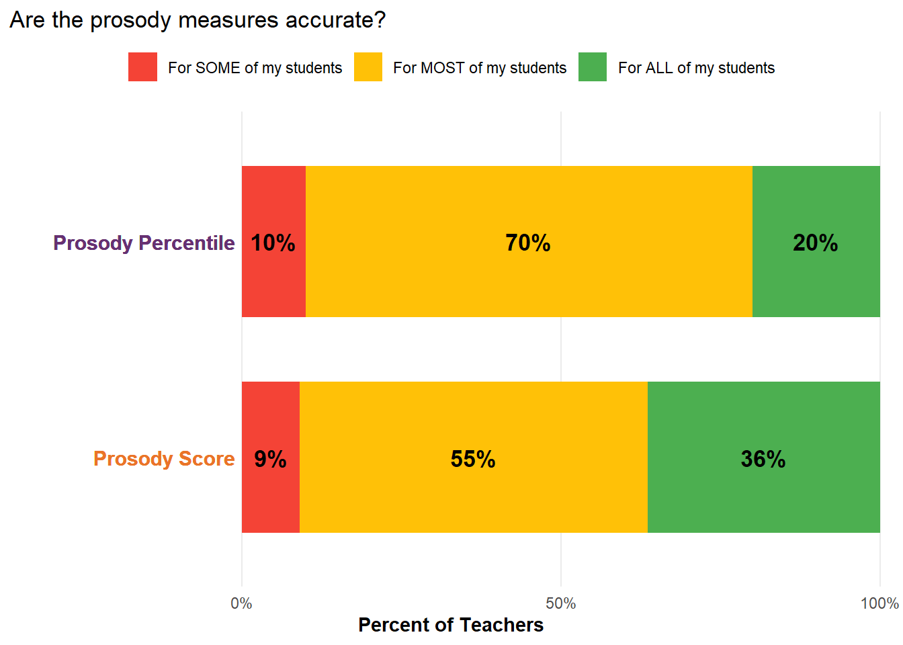
WCPM Accuracy
Overall, nearly all teachers (90%) reported that the WCPM scores were accurate for MOST or ALL of their students. Comparing the preferred measures groups, 64% of of teachers who preferred the prosody score reported that the scores were accurate for ALL of their students compared to 20% of teachers who preferred the prosody percentile.
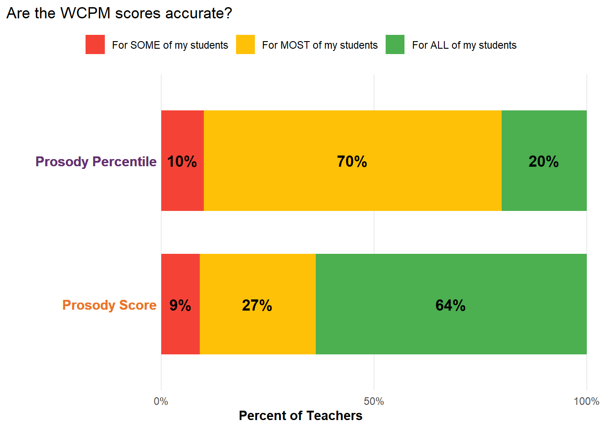
Usefullness of Prosody Scores
In general, most teachers (67%) reported affirmatively that the prosody measures were useful for their teaching. A greater percentage of teachers who preferred the prosody score (73%) reported in the affirmative that the prosody measures were useful than the percentage of teachers who preferred prosody percentile (60%).
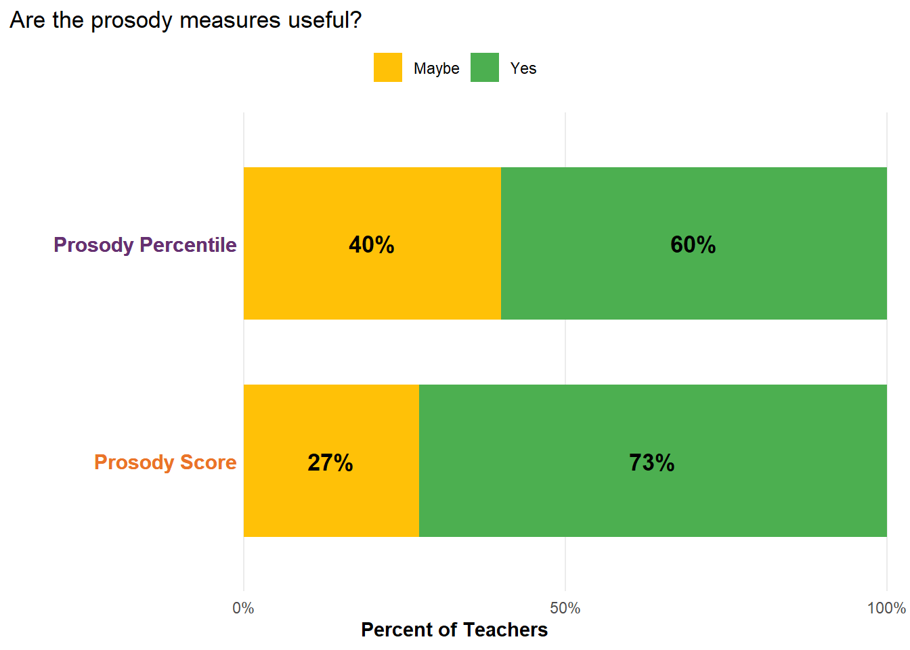
Among teachers who reported that the prosody measures provided additional information, their responses most commonly emphasized students’ expressiveness, comprehension, and reading processes beyond traditional fluency indicators. Teachers also described the measures as offering additional information about student performance, confirming or challenging prior observations, and highlighting relationships between prosody and reading fluency or speed.
| Theme | Definition | Mean % Alignment |
|---|---|---|
| Targeted Instruction & Skill Development | Prosody measures help teachers pinpoint specific areas where students need to improve their expressive reading. This allows for focused instruction on developing skills beyond just decoding, such as reading with appropriate phrasing and intonation. | 29% |
| Enhancing Overall Instructional Planning with Additional Data | Prosody measures provide an additional, valuable data point that enriches a teacher's understanding of student reading abilities. This new information contributes to a more complete picture for overall instructional planning and progress monitoring. | 29% |
| Explicit Teaching & Modeling of Expressiveness | Teachers can directly teach and model expressive reading to students, emphasizing its importance. This involves demonstrating how to read with appropriate intonation, phrasing, and emotion to convey meaning. | 25% |
| Guiding Small Grouping & Peer Learning | Prosody data can be used to strategically form small reading groups and create effective peer partnerships. This allows teachers to group students with similar needs or pair students with varying prosody levels for mutual benefit. | 25% |
| Shifting Focus to Comprehensive Fluency & Comprehension | Prosody measures encourage a broader understanding of reading fluency beyond just words per minute, integrating expression and its link to comprehension. This helps teachers move away from solely emphasizing reading speed. | 22% |
New Information from Prosody
Following review of students’ prosody scores, most teachers reported that the measures provided additional or new information about students’ reading. Affirmative responses were highest among Grade 4 teachers (83%), followed by Grade 3 (67%) and Grade 2 teachers (50%). Smaller proportions of teachers selected Maybe, while relatively few teachers indicated that the measures did not provide new information.
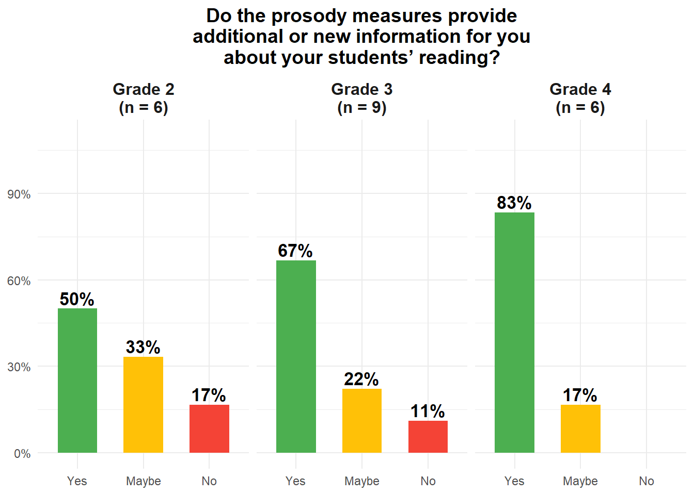
| Theme | Definition | Mean % Alignment |
|---|---|---|
| Focus on Expressiveness | The measures highlighted the importance of expressiveness in reading, moving beyond just words per minute. It provided specific data on how students convey meaning through their reading, even for those with lower fluency. | 33% |
| New Insights & Data Points | The prosody measures provided teachers with novel or more in-depth information about their students' reading abilities. This new data serves as an additional reference point for assessment and understanding student performance. | 24% |
| Validation & Unexpected Findings | The prosody scores either confirmed teachers' existing observations about students' reading or presented surprising results that challenged their initial perceptions. This led to further reflection on student performance and assessment accuracy. | 21% |
| Link to Comprehension & Processing | Teachers found that prosody scores offered insights into students' understanding and cognitive processing of the text. It suggested whether students were merely decoding words or actively making meaning as they read. | 19% |
| Correlation with Fluency/Speed | Teachers observed a relationship between prosody scores and other fluency measures like words per minute (WPM). This theme also touched upon the tension between reading for speed versus reading with expression. | 19% |
Discussion
The purpose of this study was to examine teachers’ perceptions of prosody and the potential instructional use of prosody measures alongside traditional oral reading fluency (ORF) assessments. Overall, teachers generally viewed prosody as meaningful and instructionally relevant. Across both the initial and follow-up surveys, teachers described prosody as providing information related to students’ expression, comprehension, and overall reading performance that was not fully reflected in traditional WCPM scores alone. Teachers also identified several potential instructional uses of prosody measures after reviewing their students’ prosody scores/percentiles.
One pattern that emerged across the findings was that teachers appeared to view prosody as complementary to traditional ORF measures. Many teachers described prosody as offering additional insight into students’ reading comprehension, expression, phrasing, and engagement with text. These findings align with prior research suggesting that prosody captures dimensions of fluent reading that extend beyond speed and accuracy (Miller & Schwanenflugel, 2008).
Teachers generally reported that both the WCPM and the prosody measure aligned with their understanding of students’ reading performance, although WCPM scores were more frequently viewed accurate than the prosody measure. This could be because teachers are more familiar with WCPM scores and more comfortable in their interpretation. Future research could explore whether continued exposure to prosody measures would increase teachers’ positive perception of their accuracy and application.
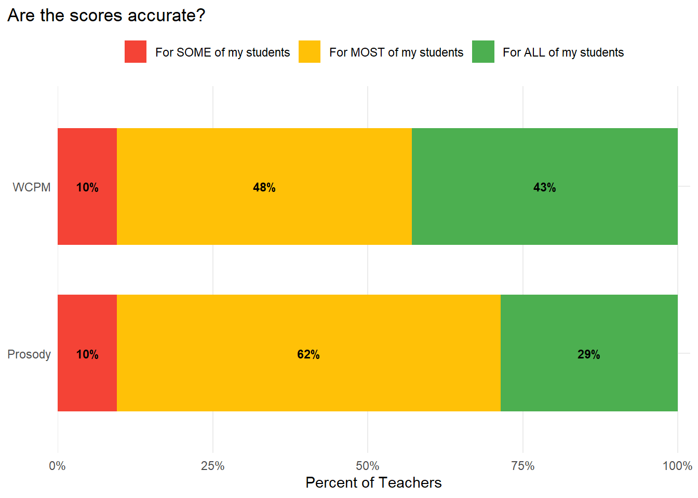
Differences between the initial and follow-up survey responses also suggested that teachers’ perceptions became more instructionally specific after reviewing their students’ prosody results. In the initial survey, teachers often discussed prosody in broad or conceptual ways, particularly in relation to expressive reading and comprehension. In the follow-up survey, however, teachers more frequently described concrete instructional applications, including identifying students who may need additional support, informing grouping decisions, monitoring expressive reading development, and interpreting reading comprehension difficulties. The findings suggest that direct exposure to prosody scores may support more detailed and instructionally focused interpretations of student reading performance.
In addition, teacher response differed between the initial and follow-up survey regarding the perceived usefulness of prosody measures for teaching. In the initial survey, responses about the usefulness of prosody scores were relatively divided between Yes and Maybe. In the follow-up survey after reviewing their students’ prosody scores and percentile measures, a larger proportion of teachers responded Yes. This finding lends support to the idea that continued exposure to prosody measures would support teachers instruction and instructional decision-making.
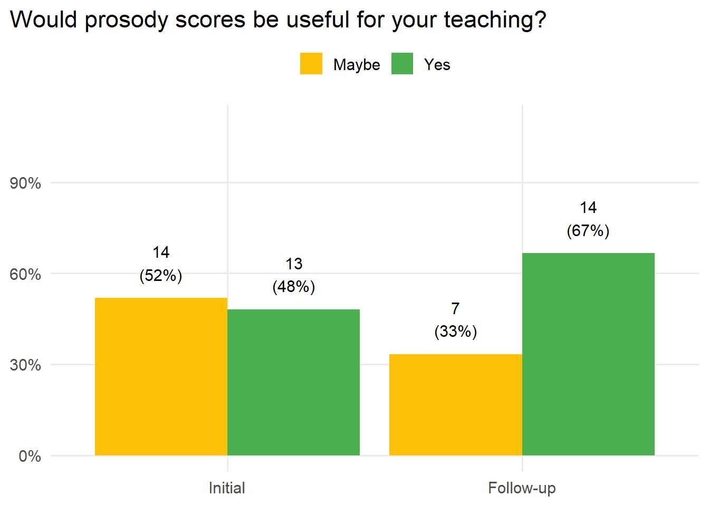
No real difference was found between how teachers preferred prosody information to be reported, either the interval prosody score or the continuous prosody percentile. Some teachers prefer the score formats because they were more direct and easier to interpret instructionally, while others preferred the percentile formats because they allowed comparison across students and contexts. These differences may reflect variation in teachers’ familiarity and comfort with different forms of assessment reporting.
Teachers who preferred the prosody score tended to rate higher the accuracy of both prosody and WCPM measures, indicating a potential difference between the preference groups (score vs percentile), with the former perhaps being more likely to give positive ratings.
Collectively, the findings suggest that prosody measures may have practical instructional value within classroom fluency assessment contexts. Teachers appeared able to interpret the prosody information and identify possible instructional applications for the data. At the same time, the findings also suggest that additional support or professional learning may help teachers more consistently interpret and apply prosody measures within instructional decision-making. Because prosody is not traditionally emphasized in many fluency assessment systems, teachers may benefit from clearer guidance regarding how prosody scores relate to comprehension, fluency development, and instructional planning. Although a limitation of the study relates to the sample size, which may limit generalizability and replicability of the results.
Future research should continue examining how teachers use prosody information within authentic classroom settings and whether access to prosody measures influences instructional decisions over time. Additional work is also needed to examine how different reporting formats affect teachers’ interpretation and use of prosody data. Finally, future studies should investigate whether integrating prosody measures alongside traditional ORF measures improves understanding of students’ reading development and instructional needs.
Overall, the findings suggest that teachers viewed prosody as a meaningful and potentially useful component of oral reading fluency assessment. Prosody scores may provide teachers with additional information that could provide more nuanced interpretations of students’ reading performance.
Surveys
Initial Survey
The purpose of this survey is to understand your perceptions of prosody, and how it might be used in your classroom.
Often described as reading expressiveness, prosody is the patterns of rhythm, stress, and intonation of speech when reading aloud that provide important information beyond a sentence’s literal meaning. Fluent reading is based on an accurate recognition of printed text, spoken with a pace and melodic flow that resembles natural conversation.
- Are oral reading fluency scores useful for your teaching?
(If YES) How do oral reading fluency scores influence your teaching, either for the whole classroom or individual students?
Do you evaluate prosody in your classroom?
(If YES) How do you evaluate prosody in your classroom?
Do you use prosody to inform your teaching?
(If YES) How do you use prosody to inform your teacher?
In your reading instruction, do you teach prosody?
(If YES) How do you teach prosody in your reading instruction?
Does a student’s prosody influence the reading supports you provide?
(If YES) How does a student’s prosody influence the reading supports you provide?
Would prosody scores be useful for your teaching?
- (If YES) How might prosody scores influence your teaching?
Follow-up Survey
The purpose of this survey is to understand your perceptions of prosody, and how it might be used in your classroom.
Often described as reading expressiveness, prosody is the patterns of rhythm, stress, and intonation of speech that provide important information beyond a sentence’s literal meaning. Fluent reading is based on an accurate recognition of printed text, spoken with a pace and melodic flow that resembles natural conversation.
- Choose your grade
- In our prosody study with you this past spring, many of your students read aloud several oral reading fluency passages for us. We used these readings to estimate words correct per minute (WCPM) and prosody for some of your students.
We are going to show to two measures of prosody.
(1) Prosody Scores - range from 1 to 4
1 = no expressiveness
2 = little expressiveness
3 = some expressiveness
4 = most expressive
(2) Prosody Percentile - represents the percent of scores that the student scored higher than. For example, the 10th percentile means the student scored higher than only 10% of prosody scores, and the 94th percentile means the student scored higher than 94% of prosody scores.
Please take a look at your students’ prosody scores below and answer the following questions.
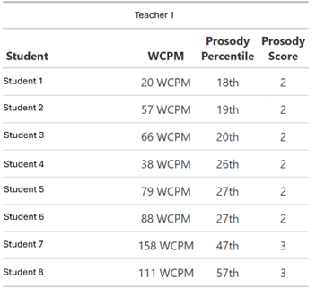
- Which prosody measure do you prefer?
Why do you prefer that prosody measure?
Do the prosody measures align with your understanding of your students? In other words, are the prosody measures accurate?
- Do the WCPM scores align with your understanding of your students? In other words, are they accurate?
- Are the prosody measures useful for your teaching?
- Do the prosody measures provide additional or new information for you about your students’ reading?
(If YES or Maybe) What additional or new information did the prosody measures provide for you about your students’ reading?
How might you use these prosody measures to inform your teaching?
Any additional feedback that you would like to share or like us to know?
References
Benjamin, R. G., & Schwanenflugel, P. J. (2010). Text complexity and oral reading prosody in young readers. Reading Research Quarterly, 45(4), 388–404.
Daane, M. C. (2005). The nation’s report card: Fourth-grade students reading aloud: NAEP 2002 special study of oral reading. National Center for Education Statistics.
Firke, S. (2024). Janitor: Simple tools for examining and cleaning dirty data. https://doi.org/10.32614/CRAN.package.janitor
Iannone, R., Cheng, J., Schloerke, B., Hughes, E., Lauer, A., Seo, J., … Roy, O. (2025). Gt: Easily create presentation-ready display tables. https://doi.org/10.32614/CRAN.package.gt
Kara, Y., Kamata, A., Potgieter, C., & Nese, J. F. T. (2020). Estimating model-based oral reading fluency: A bayesian approach. Educational and Psychological Measurement, 80(5), 847–869.
Kuhn, M. R., Schwanenflugel, P. J., & Meisinger, E. B. (2010). Aligning theory and assessment of reading fluency: Automaticity, prosody, and definitions of fluency. Reading Research Quarterly, 45(2), 230–251.
Miller, J., & Schwanenflugel, P. J. (2006). Prosody of syntactically complex sentences in the oral reading of young children. Journal of Educational Psychology, 98(4), 839.
Miller, J., & Schwanenflugel, P. J. (2008). A longitudinal study of the development of reading prosody as a dimension of oral reading fluency in early elementary school children. Reading Research Quarterly, 43(4), 336–354.
Müller, K. (2025). Here: A simpler way to find your files. https://doi.org/10.32614/CRAN.package.here
Nese, J. F. T. (2022). Comparing the growth and predictive performance of a traditional oral reading fluency measure with an experimental novel measure. AERA Open, 8, 23328584211071112.
Nese, J. F. T., & Kamata, A. (n.d.). CORE + prosody. Retrieved April 8, 2026, from https://jnese.github.io/coreprosody/
Nese, J. F. T., & Kamata, A. (2017). CORE study research. Retrieved April 8, 2026, from https://jnese.github.io/core-blog/
Nese, J. F. T., & Kamata, A. (2021a). Addressing the large standard error of traditional CBM-r: Estimating the conditional standard error of a model-based estimate of CBM-r. Assessment for Effective Intervention, 47(1), 53–58.
Nese, J. F. T., & Kamata, A. (2021b). Evidence for automated scoring and shorter passages of CBM-r in early elementary school. School Psychology, 36(1), 47.
Potgieter, C. J., Kamata, A., & Kara, Y. (2017). An EM algorithm for estimating an oral reading speed and accuracy model. arXiv Preprint arXiv:1705.10446.
R Core Team. (2025). R: A language and environment for statistical computing. Vienna, Austria: R Foundation for Statistical Computing. Retrieved from https://www.R-project.org/
Sammit, G., Wu, Z., Wang, Y., Wu, Z., Kamata, A., Nese, J., & Larson, E. C. (2022). Automated prosody classification for oral reading fluency with quadratic kappa loss and attentive x-vectors. ICASSP 2022-2022 IEEE International Conference on Acoustics, Speech and Signal Processing (ICASSP), 3613–3617. IEEE.
Valencia, S. W., Smith, A. T., Reece, A. M., Li, M., Wixson, K. K., & Newman, H. (2010). Oral reading fluency assessment: Issues of construct, criterion, and consequential validity. Reading Research Quarterly, 45(3), 270–291.
Wang, I., Larson, E., Kamata, A., & Nese, J. F. T. (2023). Sub-sequence matching algorithm for improving automated speech recognition for ORF assessment. Presentation at the annual meeting of the National Council on Measurement in ….
Wang, Y., Wu, Z., Nese, J. F. T., Kamata, A., Nilabh, V., & Larson, E. C. (2024). Improving oral reading fluency assessment through sub-sequence matching of acoustic word embeddings. ICASSP 2024-2024 IEEE International Conference on Acoustics, Speech and Signal Processing (ICASSP), 10766–10770. IEEE.
Wang, Y., Wu, Z., Nese, J. F. T., Kamata, A., Nilabh, V., & Larson, E. C. (2025). A unified model for oral reading fluency and student prosody. ICASSP 2025-2025 IEEE International Conference on Acoustics, Speech and Signal Processing (ICASSP), 1–5. IEEE.
Wickham, H., Averick, M., Bryan, J., Chang, W., McGowan, L. D., François, R., … Yutani, H. (2019). Welcome to the tidyverse. Journal of Open Source Software, 4(43), 1686. https://doi.org/10.21105/joss.01686
Wickham, H., & Bryan, J. (2025). Readxl: Read excel files. https://doi.org/10.32614/CRAN.package.readxl
Wickham, H., Cheng, J., Jacobs, A., Aden-Buie, G., & Schloerke, B. (2025). Ellmer: Chat with large language models. https://doi.org/10.32614/CRAN.package.ellmer
Wickham, H., Pedersen, T. L., & Seidel, D. (2025). Scales: Scale functions for visualization. https://doi.org/10.32614/CRAN.package.scales
Xie, Y. (2025). Knitr: A general-purpose package for dynamic report generation in R. Retrieved from https://yihui.org/knitr/
Zhu, H. (2024). kableExtra: Construct complex table with ’kable’ and pipe syntax. https://doi.org/10.32614/CRAN.package.kableExtra